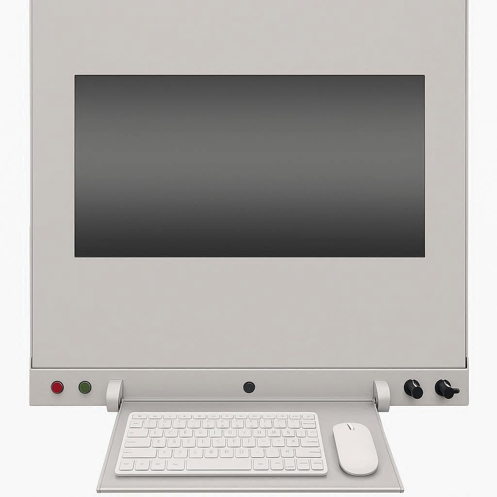
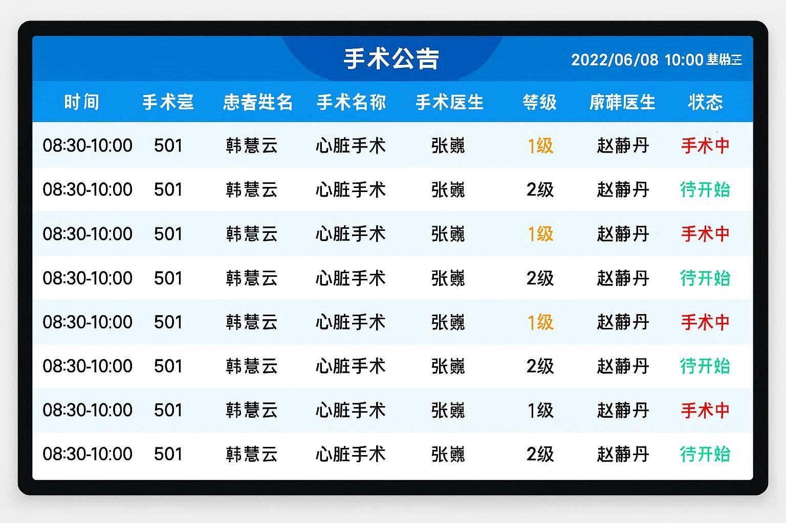

相关产品
排队叫号系统配套设备
叫号显示屏

手持PAD扫码枪

护士工作站

智能排队分诊解决方案，自动完成排队号码分配工作，按先到先办的公平原则排队，兼顾特殊条件客户的优先排队，与HIS、PACS、LIS等系统无缝对接。
支持二次分诊或多重分诊，多区域实现自动呼叫功能，支持设置优先等级，对老人、军人等特殊病人优先安排就诊。

与HIS、PACS、LIS等医院信息系统无缝对接，实现数据共享和业务协同，提升就诊效率。
排队叫号系统配套设备
